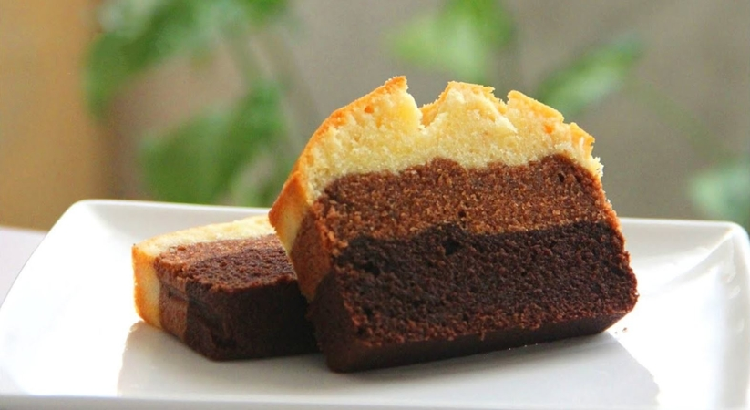

Fluffy Ombre Butter Cake Recipe

Description
This delicious butter cake is light, airy, and fluffy which makes it perfect for afternoon tea as it melts in your mouth.
The cake is made with chocolate such that it creates lovely layers as seen in the image above.
The layers are made with different variations of chocolate which are stacked from dark to light and then finaly a white vanilla layer.
The cake can be layered with the darkest layer either at the bottom or the top.
However, if the vanilla layer is placed in the middle of the two chocolate layers, the cake loses its ombre effect.
This cake is prepared in an 8sq inch pan. Line the pan, grease the sides.
Preheat the oven at 180C as you prepare the batter.
Ingredients
Cocoa Paste
- 25g cocoa powder
- 50g sugar
- 50g boiling water
- 1/2 tsp vanilla
- 1/3 tsp baking soda
Cake batter
- 120g plain flour
- 100g cake flour
- 2 tsp baking powder
- 250g salted butter, slightly softened
- 160g sugar
- 4 large Grade A eggs
- 1/2 tsp vanilla extract
- 75ml milk
Steps
- Make cocoa paste. Combine according to ingredient sequence.
- Cream butter with sugar until pale and fluffy.
- Beat in eggs, gradually then beat in vanilla.
- Put half the flour in, slowly mix with mixer , then add in milk, and the remaining flour.
- Put 325g of batter into the cocoa paste, mix and take out 325g of cocoa batter into a prepared pan.
- Put 225g of batter into the remaining cocoa batter, mix and gently spread over the first layer.
- Top with remaining batter.
- Bake at 180C (Preheated, fan off) for 1 hour.